Buying property in Portugal
Cascais
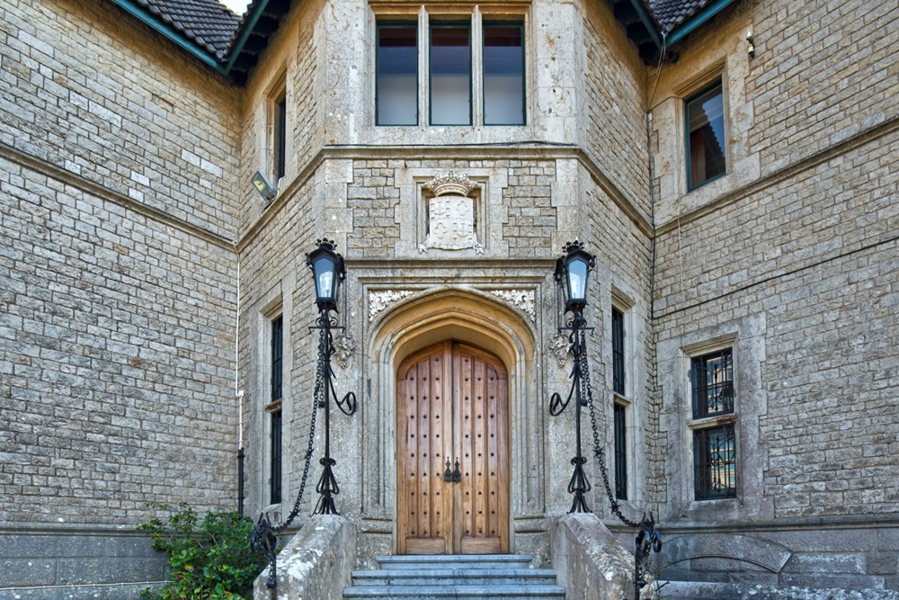
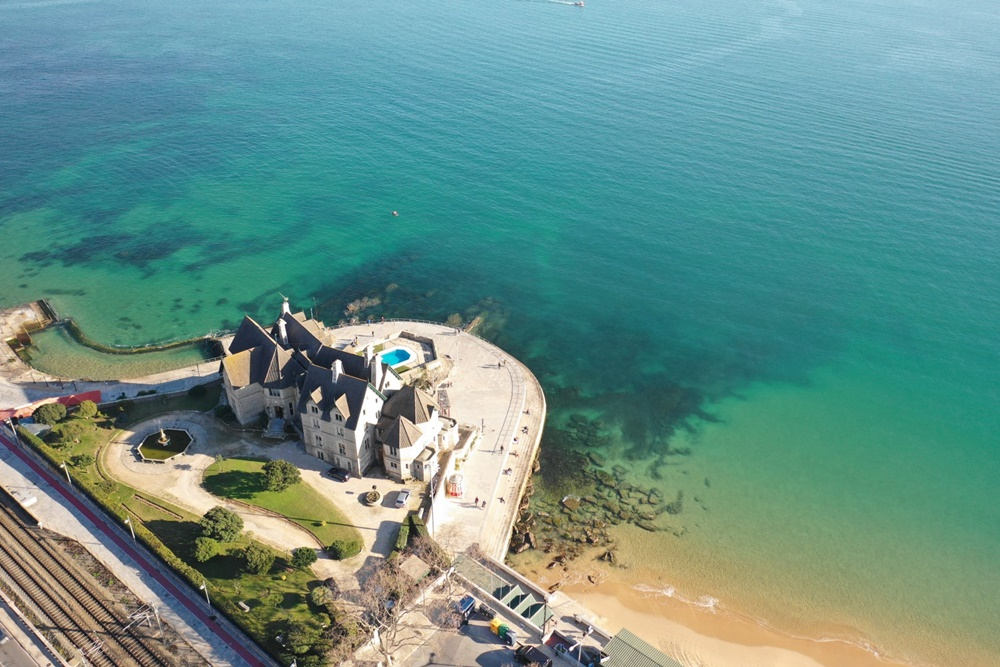
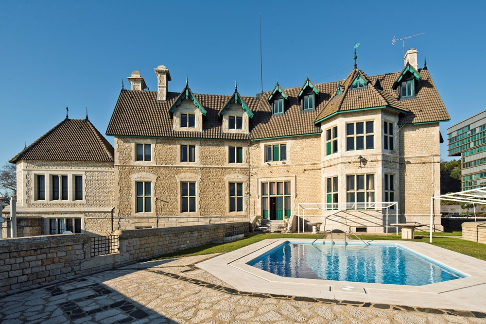
Built in 1873 and classified in 2012 as a building of public interest, this unique mansion is an historic property of Cascais. With unique features and an extraordinar location on the bay of Cascais and just 20 minutes from Lisbon, this palace with 4 floors with grounds of 3,000m2 and 2.500m2 of construction, has fabulous panoramic views of the bay of Cascais and Atlantic Ocean.
A palace inspired by an English architect which dominates the Cascais coastline.
€ 30.000.000
Lisbon
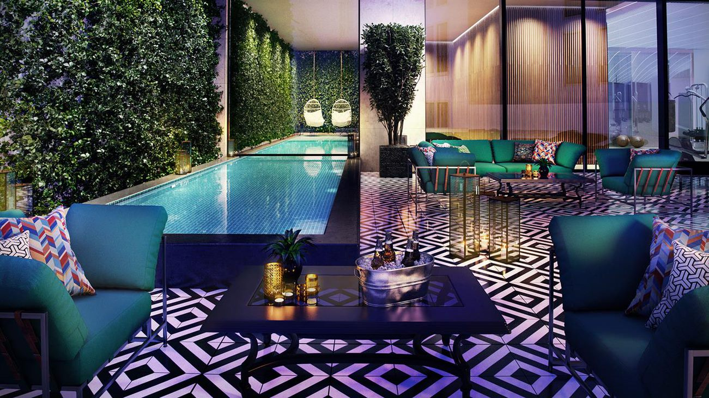
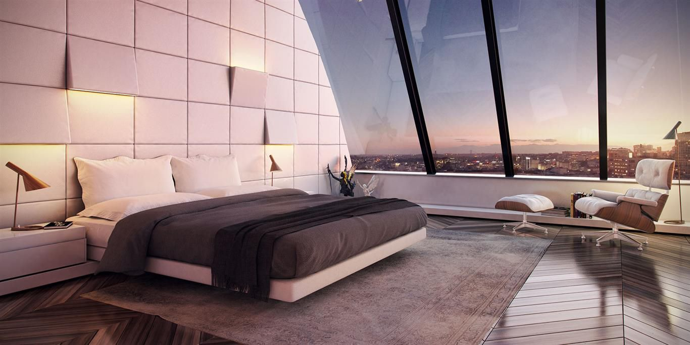
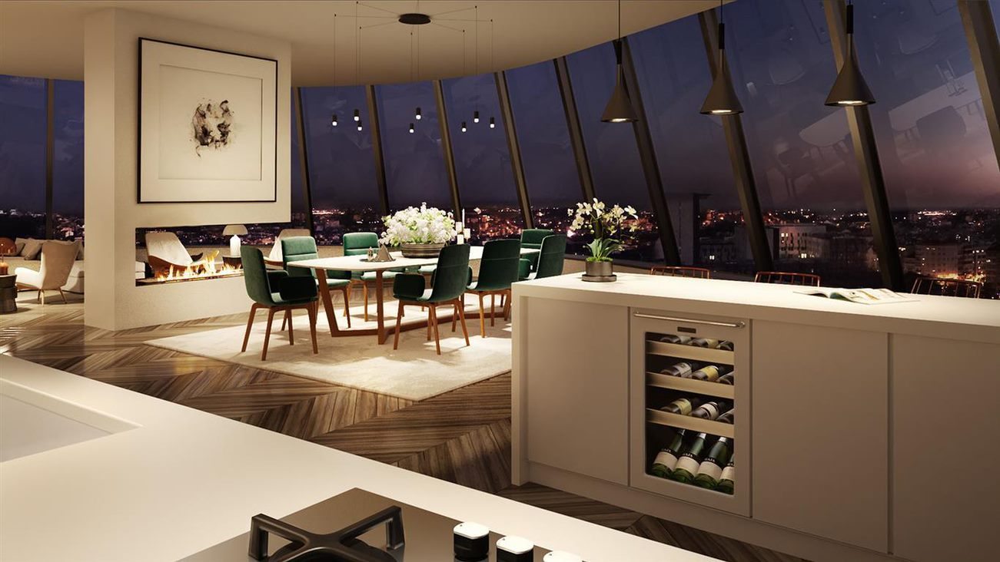
Penthouse apartment T4 on an area of 223 m2, new, with 3 parking spaces, integrated into a new real estate complex in an extraordinary central location near Saldanha. Swimming pool and gym in the residence. A quality rehabilitation preserves the historical character, as evidenced by the imposing classical facade, as well as the elegance of the interiors.
€ 3.500.000
Sintra
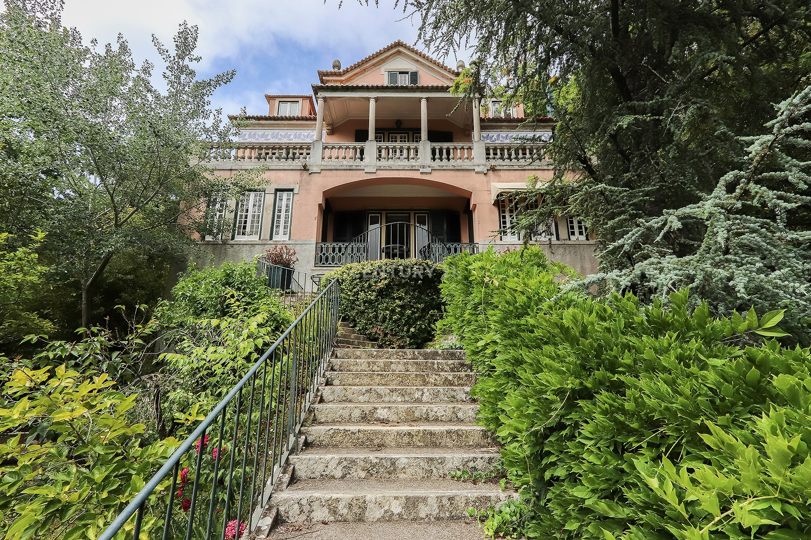
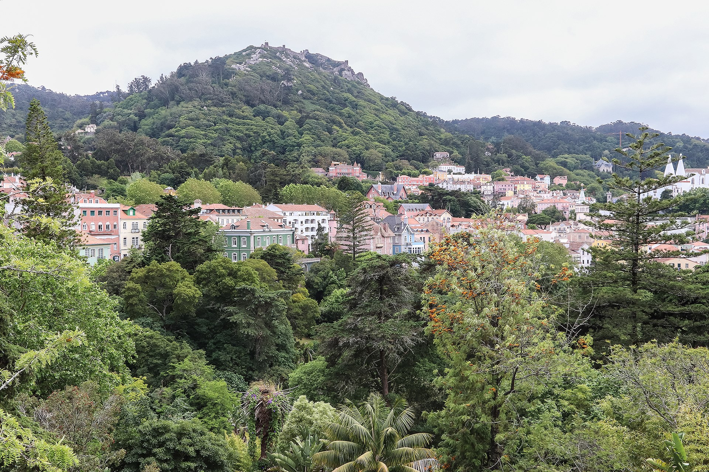
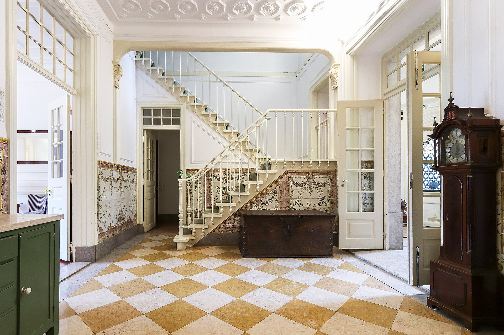
Palace of the late nineteenth century inserted in about 6,000 m2 of garden that includes the main house consisting of 4 spacious floors, large halls, seven bedrooms, an annex for employees and has two independent entrances at both ends of the property.
It is a beautiful Appalachian building enlarged in the early 20s by The Hand Of The Architect Norte Júnior, in a Riviera style, with marble floors in the noble areas and richly decorated rooms.
€ 4.995.000
Porto
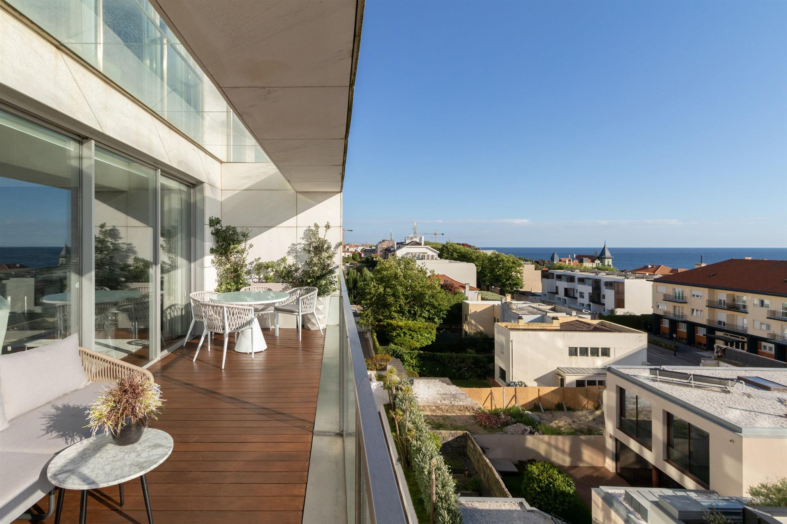
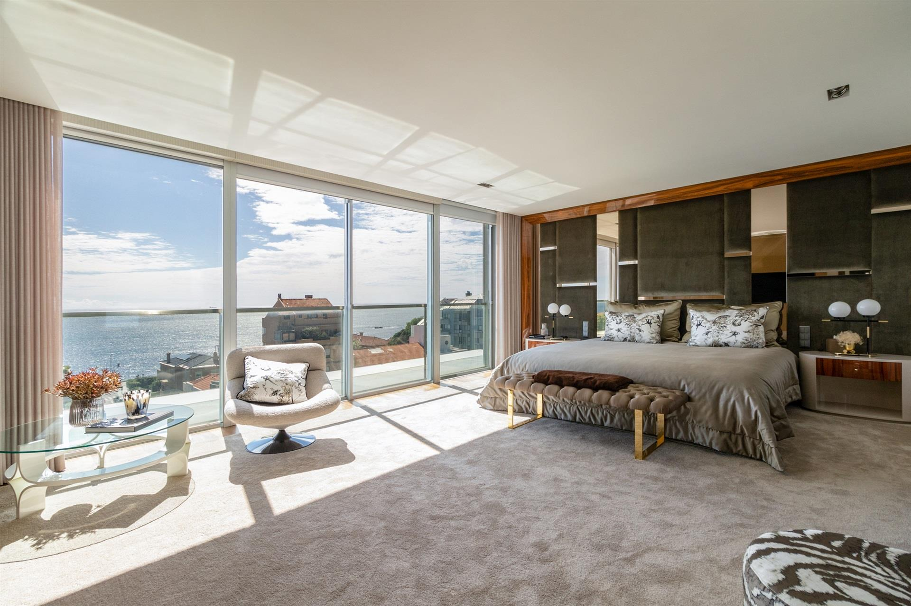
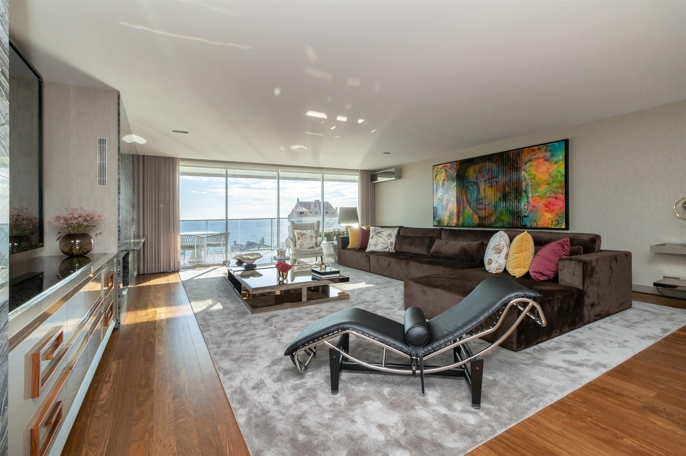
Penthouse T3 Duplex na Foz, com três frentes e terraço, com vistas de mar. É constituida por sala de jantar e sala de estar com com vistas panorâmicas, cozinha, casa de banho social, quarto de serviço e lavandaria no primeiro piso piso. No segundo piso, tem duas suites e uma espaçosa master suite com closet e vistas de mar. Tem quatro lugares de garagem. O apartamento situação-se em zona privilegiada com acesso a comércio, serviços e praia.
€ 2.500.000
Faro
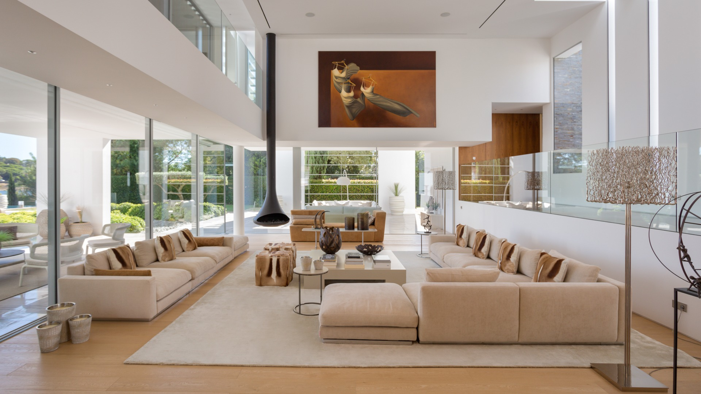
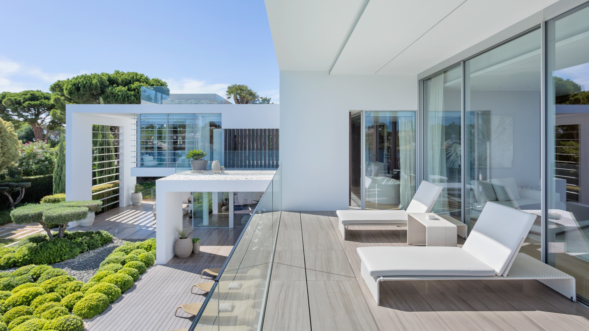
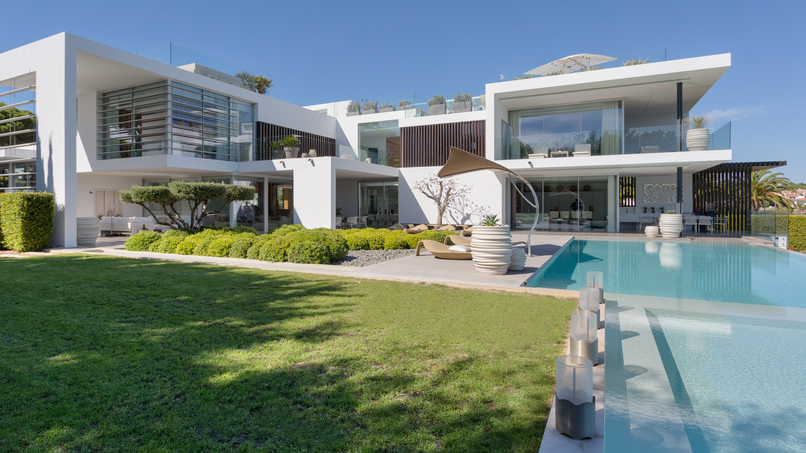
A superb eight bedroom contemporary villa with three pools on the Quinta to Lago lake designed by Vasco Vieira.
The ground floor comprises a bright entrance hall, cloakroom, fully fitted & equipped “Valcucine” Italian kitchen, formal dining area, double height living room, TV snug and three bedroom suites with terraces.
Upstairs is comprised of the large master suite and guest suite with astounding views over the lake.
€ 12.500.000